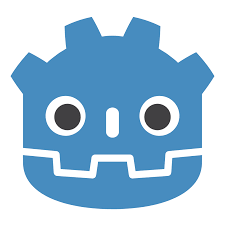
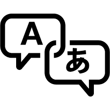

This website is entirely coded and built by me. This is something I've always wanted to do and thanks to learning HTML, CSS and JavaScript on CodeCademy; I now am!
This website contains multiple webpages, self-made styling and interactive features.
My plan for this website is to work on it continuously as I learn more skills. This is to serve as a further explanation of myself and my experience from my CV.
Presently, this website is contains HTML, CSS and JavaScript code, with images taken from the Internet under the Creative Commons Licence.
This was a project as a part of my coursework for my A-level Computer Science qualification.
I was tasked with creating some piece of software that involved OOP concepts, good script structure and had a proper development cycle.
I utilised the Agile Development Cycle to create a document outlining the progress made as well as building the game on a game engine called Godot.
The game itself involved multiple levels that required custom classes and objects, entirely created by me.
I additionally utilised software called Aseprite to design and create custom sprites for the game.
The whole project took roughly a year to fully create, but in the end, I was satisifed and proud of the project I had made and the experience I gained from creating it.

I attended a hackathon where the theme for the software was 'Human Connection'.
My team decided to make an application that could translate between two given languages. This allowed for typing messages and for speaking aloud.
While we didn't manage to create a fully developed application in the timeframe, we did manage to create a working prototype which is available on GitHub to view.
Presenting this, our team won second place in the competition.
My role in our team was, along with another team-mate, to code an algorithm that could listen for speech (or text) input, and recognise it accurately.
To do this, we connected our application to a Google Translate API so that speech from different langauges could all be recognised and then hence translated accurately too.

In this hackathon, I joined with the same team where this theme was 'Memories'.
My team decided to make an application that could take any image as input, get the year the image was taken, and play the most popular song from that year (according to spotify).
My part in this project was to connect the Spotipy API to our Python code. I did this by using the obtained year from the image, to search spotify for the URI of the most popular song of that year.
Then this URI was passed back to another algorithm (which another team member made) to play the song on the User's spotify client.
Although we didn't win runner-up nor winners of this hackathon, it was still a great experience to make.
If I were to work on this in the future, I would work on tighening the date, so that people could find the most popular song of an exact day on spotify.
I believe this would help emphasise the feeling of nostalgia as it would be more specific to the actual photo.
As a part of some Work Experience I did with the software company Bluebeck, I was tasked by the boss to create a Chatbot-like interface for an AI they have been developing for the phone company Three.
I started by designing a interface on paper to get an idea of how it would look like. Then I used Android Studio (coding in Kotlin and XML) to create the interface.
This was highly praised by the boss as excellent work.
Before starting this project, I briefly learned how to use Andriod Studio, Kotlin and XML in a small, online tutorial that some of the employees showed me.
This taught me the basics of the three, and then I worked accordingly to eventually build up the interface, tested it on a test phone, and finally showed the CEO at the end of my work experience.